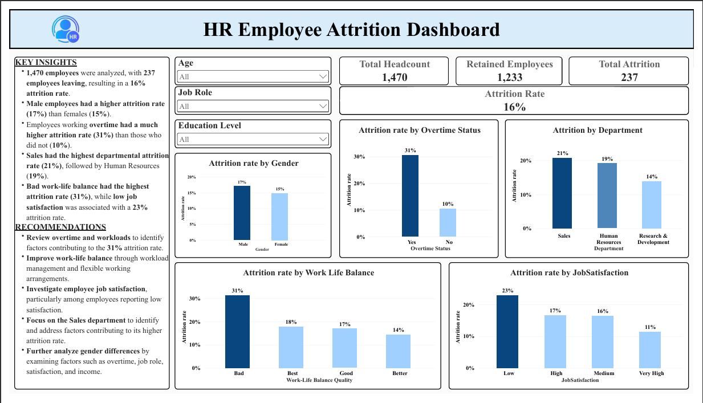
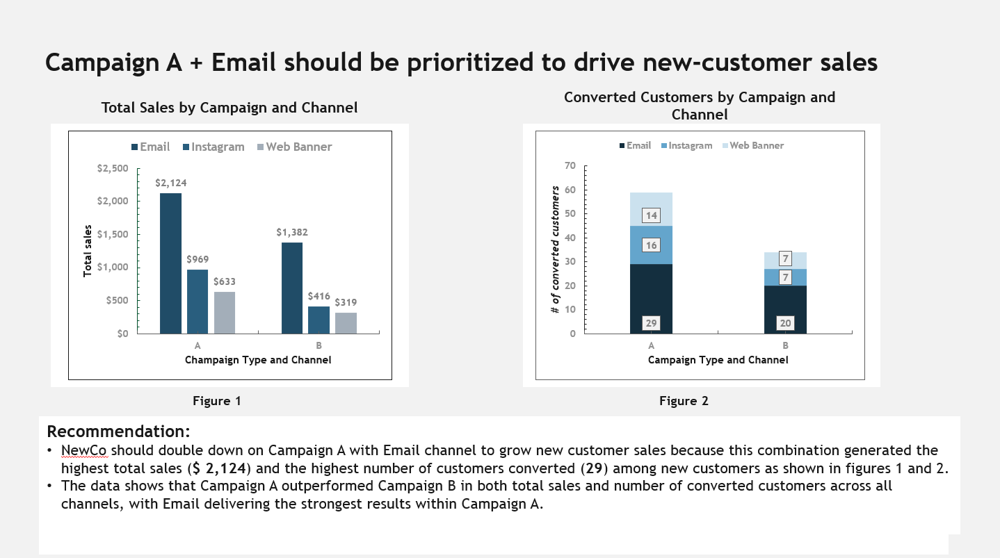

PROFESSIONAL PROJECT • LOOKER STUDIO
Pangolin Monitoring Dashboard
A monitoring dashboard developed to track pangolin weight changes during rehabilitation and support monitoring of animal health and rehabilitation progress.
DATA ANALYST • DATA MANAGEMENT • M&E
I work with data to improve data quality, reporting, monitoring and decision-making. My experience combines data management and M&E with practical analytics, dashboard development and business intelligence.
ABOUT ME
I am a Data Analyst and Monitoring & Evaluation professional with experience in data management, data quality assurance, reporting and analysis.
My work involves transforming raw and operational data into accurate, structured and useful information for reporting, monitoring and decision-making.
I have developed dashboards and analytical projects using tools including Microsoft Excel, Power Query, Power Pivot, DAX, Power BI, Looker Studio and Google Sheets.
I am particularly interested in using data and business intelligence to identify trends, communicate insights and support evidence-based decisions.
PROJECTS
A combination of professional dashboards and independent analytics projects demonstrating practical data analysis and business intelligence skills.
Data and dashboard projects developed to support monitoring, reporting and operational decision-making.
PROFESSIONAL PROJECT • LOOKER STUDIO
A monitoring dashboard developed to track pangolin weight changes during rehabilitation and support monitoring of animal health and rehabilitation progress.
PROFESSIONAL PROJECT • LOOKER STUDIO
A dashboard analyzing visitor patterns by day, time and visitor group to support operational planning, staffing and decisions around visitor-centre opening hours.
Independent projects using public datasets to demonstrate practical data analysis, visualization and dashboard development.

PERSONAL PROJECT • POWER BI
An interactive HR dashboard analyzing employee attrition, retention and workforce patterns using a public HR dataset.
View on GitHub →
PERSONAL PROJECT • EXCEL
A healthcare analytics dashboard developed from a public diabetes dataset, using Power Query for data cleaning and Power Pivot for data relationships and analysis.
View on GitHub →
PERSONAL PROJECT • MICROSOFT EXCEL
An interactive sales dashboard analyzing sales performance by time, region, segment, category, product and city to identify key business trends.
View on GitHub →SKILLS
CERTIFICATIONS
Selected certifications and professional development completed in data analytics, business intelligence, data literacy, AI and monitoring & evaluation.
DataCamp
2026
DataCamp
2026
DataCamp
2026
DataCamp
2026
DataCamp
2026
Philanthropy University / FHI360
2025
Philanthropy University / FHI360
2024
JOB SIMULATIONS
Practical simulations completed to develop data analysis, visualization, insight generation and business communication skills.
Forage • Virtual Job Simulation
Boston Consulting Group (BCG) • 2026
Completed a practical data analytics simulation focused on campaign performance data and business decision-making. The simulation involved analyzing campaign and channel performance, creating visualizations, identifying the strongest combination and communicating a client recommendation.
Which campaign and channel combination should the client double down on to grow new-customer sales — and why?
Campaign A + Email was the strongest combination, generating $2,124 in total sales and 29 converted customers.
Prioritize Campaign A through Email to grow new-customer sales because it delivered the strongest results in both sales and customer conversions.

CONTACT
I am open to opportunities in data analytics, business intelligence, data management, reporting and monitoring & evaluation.